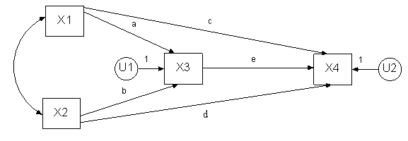

David A. Kenny
September 6, 2011
.
Terminology and Basics of SEM
Standard Structural Equation
The standard formulation:
Effect
Structural Causal
= Sum
X
+ Disturbance
Variable
Coefficient Variable
Path Analytic Equation
This formulation is less frequently used:
Effect
Path Causal
=
Sum
X
+ Path X Disturbance
Variable Coefficient Variable
All variables are standardized although sometimes this equation is given without the disturbance standardized and so it does not have a coefficient.
Standardized Variable
Variable whose mean is zero and variance is one.
Latent Variable
A variable in the model that is not measured. It is also called an unmeasured or unobserved variable or a factor.
Exogenous
Variable
A variable that is not caused by another variable in the model. Usually this variable causes one
or more variables in the model.
Endogenous
Variable
A variable that is caused by one or more variable in the model. Note that an endogenous variable
may also cause another endogenous variable in the model.
Structural Coefficient
A measure of the amount of change in the effect
variable expected given a one unit change in the causal variable and no change
in any other variable. Although like a regression coefficient, this
coefficient may not be estimable by multiple regression.
Disturbance
The set of unspecified causes of the effect variable. Analogous to
an error or residual in a prediction equation. Usually each
endogenous variable has a disturbance. (Go
to an exception.) The disturbance is treated as a latent variable.
Structural Model
The set of structural equations.
Path Diagram
A diagram that pictorially represents a structural
equation model. Curved lines represent unanalyzed associations.
Measured variables are designated by a box and latent variables, including
disturbances, are represented by ovals. Covariances or correlations
between exogenous variables and between disturbances are represented by curved
lines with arrowheads at both ends. Paths are represented by straight
lines with an arrowhead pointing from the causal variable toward the effect
variable.
Not allowed in a path diagram is a curved line from an endogenous variable. If a correlation is desired, it would be drawn from the variable’s disturbance.
Example of a Structural Model
X3 = aX1 + bX2 + U1
X4 = cX1 + dX2 + eX3 + U2
Note that X3 and X4 are endogenous (i.e., caused), X1 and X2 are exogenous (not caused), and U1 and U2 are disturbances. Note that endogenous variable X3 is both a cause and an effect variable. The path diagram for this model is as follows:

Note that the disturbances have paths of one in that there is an implicit one
in the structural equations. Note also
that disturbances are represented by ovals.
Hierarchical Model: Models
without Feedback
A model in which the structural equations can be
ordered such that any variable appearing as an effect in a given equation does
not appear as a cause in any prior equation. Such a model has no
feedback loops. All non-hierarchical models are said to be
non-recursive. However, not all non-recursive models are non-hierarchical
models. The above path model is hierarchical in that if we order the
equations, X3 and X4, no cause of X3 later
appears as an effect.
Tracing Rule
The correlation between any pair of variables equals the sum of the products of
the paths or correlations from each tracing. A tracing between two variables is
any route in which the same variable is not entered twice and no variable is
entered and left through an arrowhead. This rule applies only to
hierarchical models — models without feedback. (To see an example of the tracing rule.)
Specification
The translation of theory, previous research, design, and common sense into a
structural model.
Specification Error
An assumption made in structural model that is false. So for instance, if
a path in a model is set to zero and that path is not zero, there would be a
specification error. It is reasonable to believe that all models contain
specification error. One seeks to create a model with the least amount of
specification error.
Identification
A model is said to be identified if there exists a
unique solution for all of the model's parameters. If there is no unique
solution, then the model is of little value. Note that a model may not be identified, but some of the model’s
parameters may be identified.
Minimum Condition of
Identifiability
The number of known values must equal or exceed the number of free parameters
in the model. This rule is sometimes called the t rule. All identified
models meet this rule and if the rule is not met the model is not identified.
However, some models that meet this rule are not identified. As will be
seen, the model in the path diagram meets this condition.
Known Values
For the standard specification, the number of known values is the number of covariances or k(k + 1)/2
where k is the number of variables. For the path diagram, the number of knowns is (5)(4)/2 or 10. If means are also estimated the number of knowns is k(k + 3)/2. For the path
diagram above, the number of knowns is (5)(4)/2 or 10.
For the path analytic specification the number of known values is k(k - 1)/2 where k is the number of variables. For the path diagram, the number of knowns using the path analytic specification is (4)(3)/2 or 6.
Covariance
The covariance between two variables equals the correlation times the product
of the variables' standard deviations. The covariance of a variable with
itself is the variable's variance.
Free Parameters or Unknowns in a Structural
Model
Standard specification: paths, covariances between the exogenous variables,
between the disturbances and between exogenous variables and disturbances, and
variances of the exogenous variables and disturbances of endogenous variables
less the number of linear constraints. For the path diagram, the number
of unknowns is 10, 5 paths, 1 curved line, 2 exogenous variable, and 2
endogenous variances.
Path analytic specification: paths (not including the disturbance paths) and correlations between the exogenous variables, between the disturbances, and between the exogenous variables and the disturbances less the number of linear constraints. For the path diagram, the number of unknowns is 6, 5 paths and 1 curved line.
Constraints
Setting of a parameter equal to some function of other
parameters. The simplest constraint is to set one parameter equal to
another parameter. Zero constraints are usually not counted. (For more information on constraints.)
Degrees of Freedom of a
Model
The numbers of knowns minus the number of free
parameters; used in many measures of fit. The degrees of freedom can be viewed the number of independent over-identifying restrictions.
Just-identified or Saturated Model
An identified model in which the number of free parameters exactly equals the
number of known values, i.e, a model with zero
degrees of freedom. Note that not all models in which the knowns equal the unknown are identified and so these models
are not identified. The example model is
just-identified. Note that the number of knowns exactly equals the number of unknowns.
Under-identified Model
A model for which it is not possible to estimate all
of the model's parameters. For some under-identified models, some
parameters are identified.
Over-identified Model
A model for which all the parameters are identified and for which there are
more knowns than free parameters. An
over-identified matrix places constraints on the correlation or covariance
matrix.
Over-identifying Restriction
A constraint on the variance-covariance matrix of
observed variables. For instance, it
might be the case that two covariances are equal to each other although usually
the constraint is much more complicated. Very often an over-identifying restriction can be thought of the
constraint that results when two estimates of an over-identified parameter are
set equal.
Empirical
Under-identification
A model which is theoretically identified, but one or more of the parameter
estimates has a denominator that equals a very small value. Empirically
under-identified parameters are very unstable. One example of an
empirical under-identified model is a path analysis model with high multicollinearity, i.e., two causal variables
highly correlated.
Model Fit
The ability of an over-identified model to reproduce the correlation or
covariance matrix of the variables.
Steps of Structural Equation Modeling
STEP 1: SPECIFICATION
Statement of the theoretical model either as a set of structural equations or
as a path diagram.
STEP 2: IDENTIFICATION
The model can in theory and in practice be estimated
with observed data (to learn the general rules of
identification).
STEP 3: ESTIMATION
The model's parameters are statistically estimated from data. Multiple regression is one such
estimation method, but typically more complicated estimated methods are
used. Generally, a specialized SEM program (e.g., AMOS or LISREL) is
used.
STEP 4: MODEL FIT
The estimated model parameters are used to predict the
correlations or covariances between measured variables and the predicted
correlations or covariances are compared to the observed correlations or
covariances (see measures of model fit). If the fit of the model is poor, then the
model needs to be re-specified and the researcher returns to Step 1.